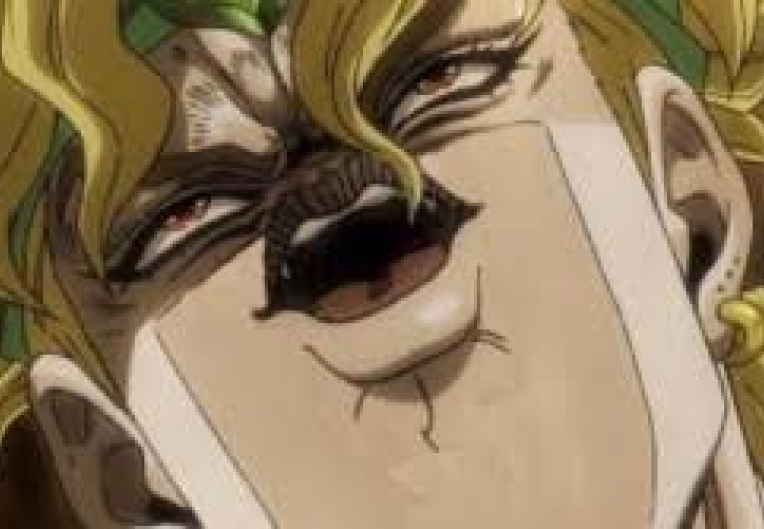
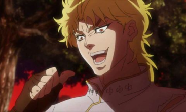
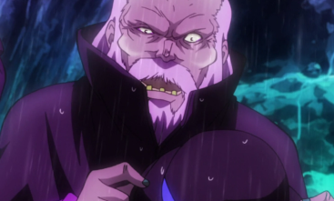
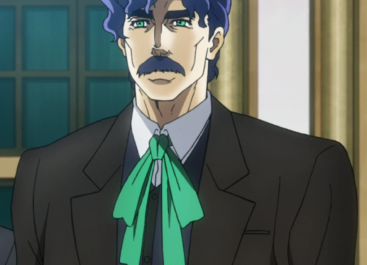

невероятные приключения джо джо аниме сериал сериал созданый по мотивам одноименой манге в 1987 году. сюжет: в англии начале 20 века проез жает карета джостаров которая падает в ущелье ,ее находит человек который помогает им. следующие несколько лет человек который помог джостарам отправляет своего сына им в поместье для лучшего будущего. в поместье его встречает глава джостаров и его сын джонатан и теперь сын того человека который их спас будет жить вместе с ними.

дио(сын человека который спас джостаров)

человек спасший джостаров(отец дио)
джонатан джостар

джордж джостар